Website

The website is the first thing that I made, You can go there at https://cartographer-vocabulary.web.app
Lists
You can add lists by clicking the "+" button next to my lists, then you enter a name and click ok. Here you can add new words by typing in the two text fields on the bottom, and the pressing the enter key.
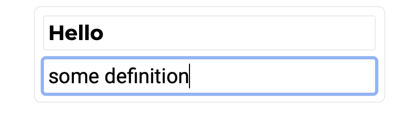you can now see a card as popped up on the bottom, and a flashcard on the top.
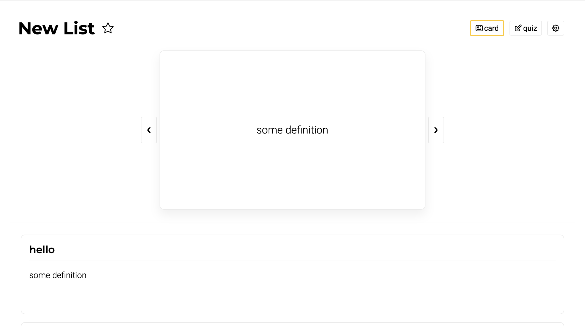One of the great features about this website is the fact that the cards are in a grid, allowing you to see much more of them at a glance.
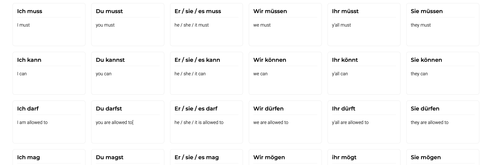you can also drag to reorder these cards.
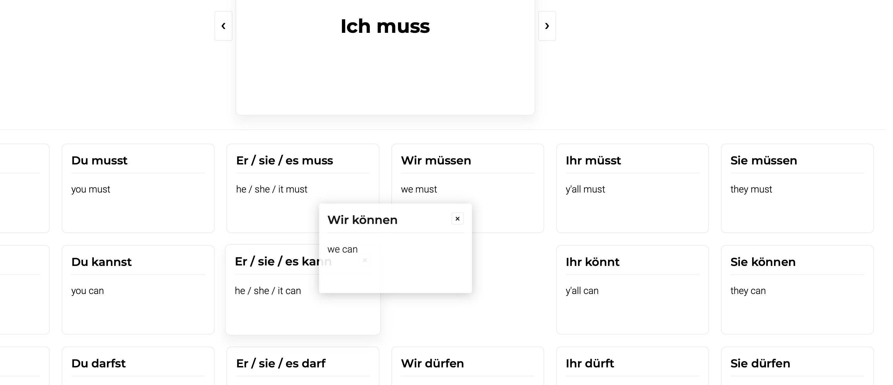Now let's go to the quiz mode, it's quite simple, with 4 randomly generated options, you can click on the options with your mouse, or use the number keys 1-4. Here you can practice for as long as you want.
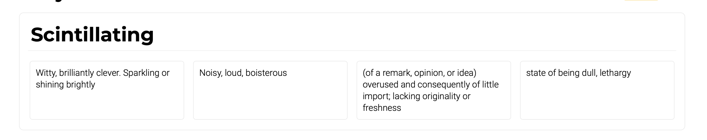Here is the settings for lists. At the top, you can edit the name, or delete the list. In the drop down labeled folder, you can select which folder to put your lists in, we'll talk about this more In a bit. Then there are the sharing preferences. The checkbox for public decides whether everyone with the link can view. You can then add viewers or editors to this list by entering their email. At the bottom you can also import your lists from quizlet.
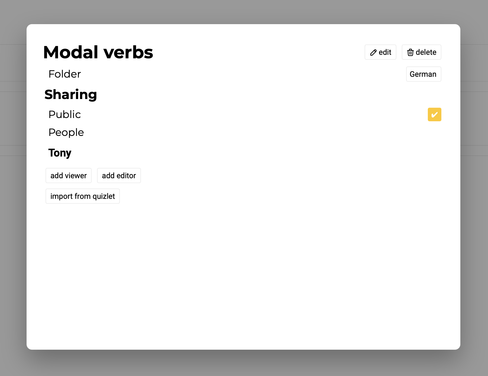Folders
You can add them the same way as the lists, by clicking on the "+" button on the side bar. All folders start out being empty, of course, but you can add a list by clicking the add list button in the folder view, or moving a list to that folder from the list settings.
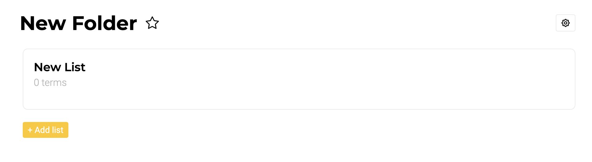The folder settings are almost the same as the lists, sans move to folder, and import from quizlet.
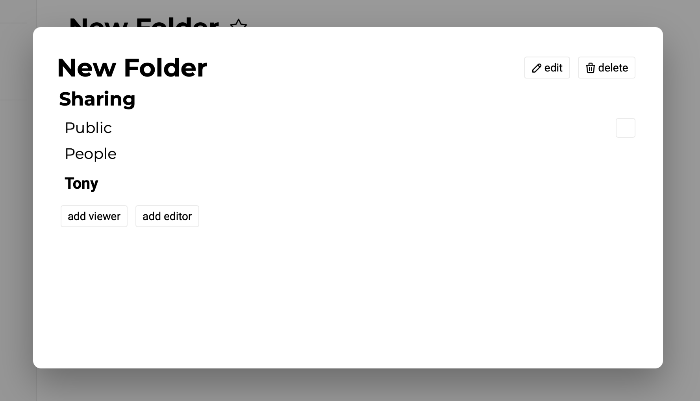Favorites
You can star lists and folders by clicking the star on the top, and you can see all of the lists & folders in the favorites tab on the sidebar.
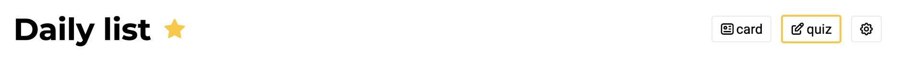 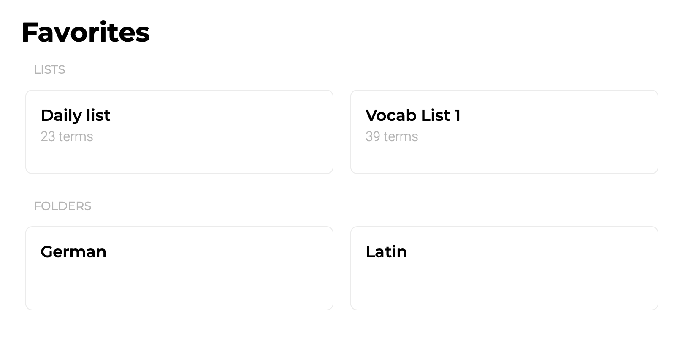Profile
Finally, the user profile, It's extremely simple, because I don't collect any data, send any emails, or anything so all of those settings don't exist. You can change your name, sign out, and use the different color schemes and themes.
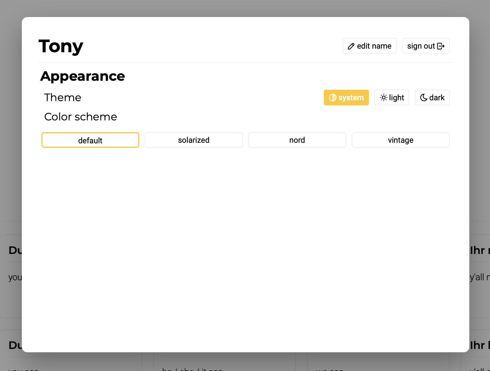 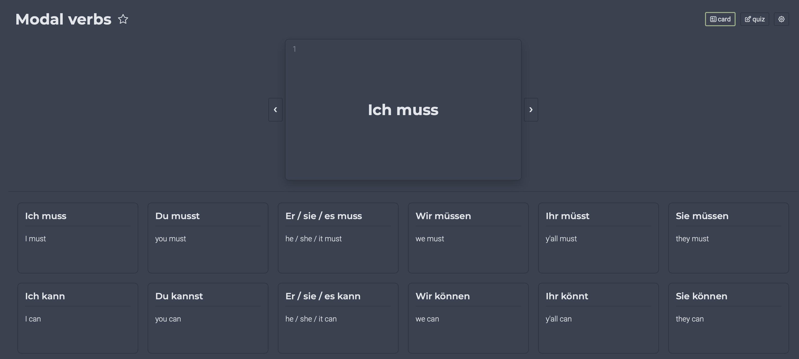